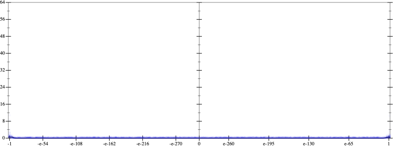
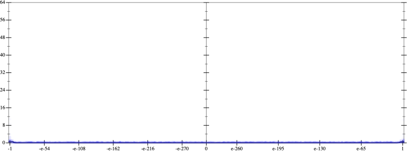

Initial program 0.0
\[\left(\left(\left(1680.0 + -13440.0 \cdot \left(x \cdot x\right)\right) + 13440.0 \cdot \left(\left(\left(x \cdot x\right) \cdot x\right) \cdot x\right)\right) + -3584.0 \cdot \left(\left(\left(\left(\left(x \cdot x\right) \cdot x\right) \cdot x\right) \cdot x\right) \cdot x\right)\right) + 256.0 \cdot \left(\left(\left(\left(\left(\left(\left(x \cdot x\right) \cdot x\right) \cdot x\right) \cdot x\right) \cdot x\right) \cdot x\right) \cdot x\right)\]
- Using strategy
rm Applied add-exp-log11.1
\[\leadsto \left(\left(\left(1680.0 + -13440.0 \cdot \left(x \cdot x\right)\right) + 13440.0 \cdot \left(\left(\left(x \cdot x\right) \cdot x\right) \cdot x\right)\right) + -3584.0 \cdot \left(\left(\left(\left(\left(x \cdot x\right) \cdot x\right) \cdot x\right) \cdot x\right) \cdot x\right)\right) + 256.0 \cdot \left(\left(\left(\left(\left(\color{blue}{e^{\log \left(\left(x \cdot x\right) \cdot x\right)}} \cdot x\right) \cdot x\right) \cdot x\right) \cdot x\right) \cdot x\right)\]
Applied simplify30.9
\[\leadsto \left(\left(\left(1680.0 + -13440.0 \cdot \left(x \cdot x\right)\right) + 13440.0 \cdot \left(\left(\left(x \cdot x\right) \cdot x\right) \cdot x\right)\right) + -3584.0 \cdot \left(\left(\left(\left(\left(x \cdot x\right) \cdot x\right) \cdot x\right) \cdot x\right) \cdot x\right)\right) + 256.0 \cdot \left(\left(\left(\left(\left(e^{\color{blue}{3 \cdot \log x}} \cdot x\right) \cdot x\right) \cdot x\right) \cdot x\right) \cdot x\right)\]
Taylor expanded around -inf 62.0
\[\leadsto \left(\left(\left(1680.0 + -13440.0 \cdot \left(x \cdot x\right)\right) + 13440.0 \cdot \left(\left(\left(x \cdot x\right) \cdot x\right) \cdot x\right)\right) + -3584.0 \cdot \left(\left(\left(\left(\left(x \cdot x\right) \cdot x\right) \cdot x\right) \cdot x\right) \cdot x\right)\right) + 256.0 \cdot \left(\left(\left(\left(\left(\color{blue}{e^{3 \cdot \left(\log -1 - \log \left(\frac{-1}{x}\right)\right)}} \cdot x\right) \cdot x\right) \cdot x\right) \cdot x\right) \cdot x\right)\]
Applied simplify0.0
\[\leadsto \color{blue}{\left(\left(x \cdot x\right) \cdot \left(x \cdot x\right)\right) \cdot \left(13440.0 + \left(256.0 \cdot x\right) \cdot {x}^{3}\right) + \left(\left(\left(x \cdot x\right) \cdot -13440.0 + 1680.0\right) + \left(\left(x \cdot x\right) \cdot -3584.0\right) \cdot \left(\left(x \cdot x\right) \cdot \left(x \cdot x\right)\right)\right)}\]

 
